Cylinder Block Assembly (2AZ-FE) Disassembly |
| 1. Inspect Connecting Rod Thrust Clearance |
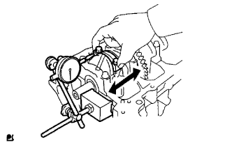 |
Using a dial indicator, measure the thrust clearance.
| 2. Inspect Connecting Rod Oil Clearance |
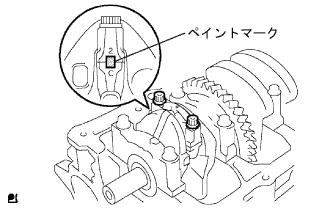 |
Using paint, mark each connecting rod and cap with its cylinder number.
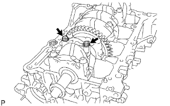 |
Using a socket wrench (12mm), remove the bolts and remove the bearing cap.
Clean the inner and outer surfaces of the bearings, the connecting rod ends and the crank pins.
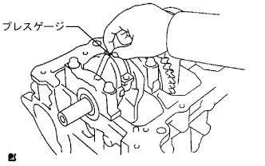 |
Lay a strip of Plastigage across the crank pin.
 |
Check the combination of the connecting rod and bearing cap and the front mark on the bearing cap, and assemble the bearing cap to the connecting rod.
Apply a light coat of engine oil to the threads and seats of the bolts.
Using a socket wrench (12mm), temporarily tighten the bolts in 2-3 steps, then tighten them to the specified torque.
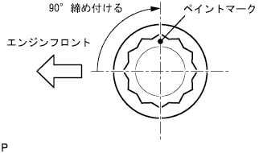 |
Mark the front of the bolt heads with paint.
Using the paint marks as a guide, tighten each bolt an additional 90°.
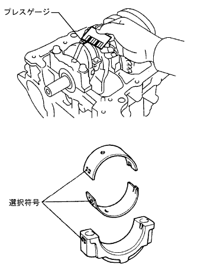 |
Remove the bearing caps and measure the Plastigage at its widest point.
| Selection Mark | Connecting Rod Big End Bore Diameter [mm] | Connecting Rod Bearing Thickness [mm] | Crank Pin Diameter [mm] |
|---|---|---|---|
| 1 | 51.000-51.007 | 1.485-1.488 | 47.99-48.00 |
| 2 | 51.008-51.013 | 1.489-1.491 | 47.99-48.00 |
| 3 | 51.014-51.020 | 1.492-1.494 | 47.99-48.00 |
| 3. Remove Piston with Connecting Rod |
Remove the 4 pistons with connecting rods from the cylinder block.
| 4. Remove Connecting Rod Bearing |
Remove the 8 connecting rod bearings from the connecting rods and bearing caps.
| 5. Remove Piston Ring Set |
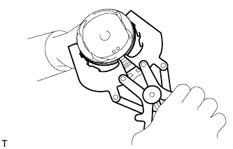 |
Using a piston ring expander, remove the compression ring No.1 and compression ring No.2.
Remove the oil ring expander and oil ring by hand.
| 6. Remove Piston Pin Hole Snap Ring |
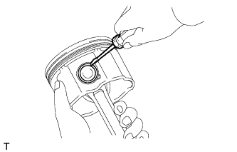 |
Using a small screwdriver, remove the snap ring.
| 7. Remove Piston |
Heat the piston to approximately 80°C.
Push out the piston pin with your thumb and remove it from the piston.
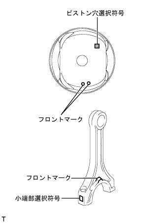 |
Arrange the removed parts in order according to their installation positions.
| 8. Inspect Crankshaft Thrust Clearance |
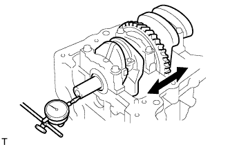 |
Using a dial indicator and a screwdriver, measure the thrust clearance.
| 9. Remove Crankshaft |
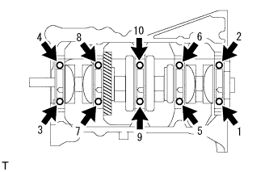 |
Uniformly loosen the bearing cap bolts in 2-3 steps in the order shown in the illustration, and remove the 10 bearing cap bolts.
Remove the 5 bearing caps and remove the crankshaft.
| 10. Remove Crankshaft Thrust Washer Upper |
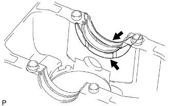 |
Remove the crankshaft thrust washer set from the front and rear of the No. No.3 journal on the cylinder block.
| 11. Remove Crankshaft Bearing |
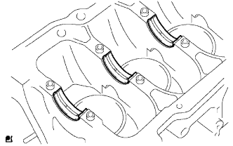 |
Remove the 5 crankshaft bearings from the cylinder block.
| 12. Remove Crankshaft Bearing NO.2 |
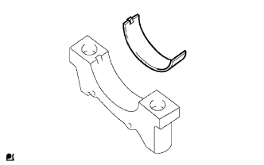 |
Remove the 5 crankshaft bearings No.2 from the bearing caps.
| 13. Remove Oil Nozzle Sub-assembly NO.1 |
 |
Using a 5 socket hexagon wrench, remove the 4 oil nozzles No.1.
| 14. Inspect Oil Nozzle Sub-assembly NO.1 |
Inspect the oil nozzles for damage or clogging.
| 15. Remove Stud Bolt |
Remove the stud bolts from the cylinder block.
| 16. Remove Ring Pin |
Remove the ring pins from the cylinder block.
| 17. Remove Straight Pin |
Remove the straight pins from the cylinder block.
| 18. Inspect Cylinder Block for Warpage |
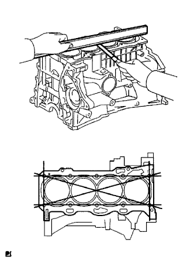 |
Using a precision straightedge and feeler gauge, measure the warpage of the top surface of the cylinder block.
| 19. Inspect Cylinder Bore |
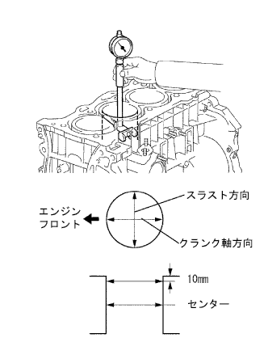 |
Using a cylinder gauge, measure the bore diameter at the 4 positions shown in the illustration.
| 20. Inspect Piston Outer Diameter |
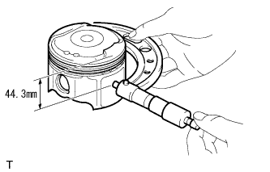 |
Using a micrometer, measure the piston diameter at right angles to the piston pin hole, 44.3mm from the top of the piston.
| 21. Inspect Piston Clearance |
Calculate the clearance from the minimum cylinder bore diameter and the piston diameter.
| 22. Inspect Ring Groove Clearance |
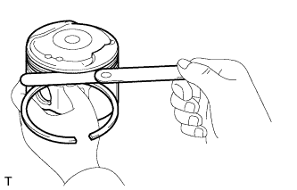 |
Using a feeler gauge, measure the clearance between the piston ring and the ring groove around the entire circumference of the piston.
| Type | Standard [mm] |
|---|---|
| No. No.1 Ring | 0.02-0.07 |
| No. No.2 Ring | 0.02-0.06 |
| Oil Ring | 0.02-0.07 |
| 23. Inspect Piston Ring End Gap |
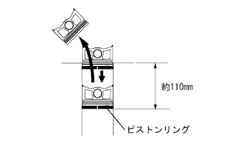 |
Using a piston, push the piston ring approximately 110mm down from the top of the cylinder block.
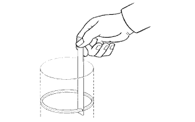 |
Using a feeler gauge, measure the end gap of the piston ring.
| Ring | Standard [mm] | Maximum [mm] |
|---|---|---|
| No.1 | 0.24-0.31 | 0.89 |
| No.2 | 0.33-0.43 | 1.37 |
| Oil | 0.10-0.30 | 0.73 |
| 24. Inspect Piston Pin Oil Clearance |
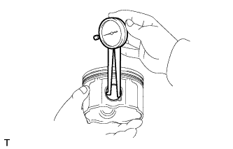 |
Using a caliper gauge, measure the inside diameter of the piston pin hole.
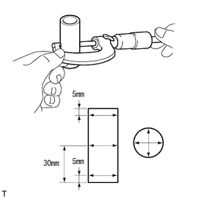 |
Using a micrometer, measure the piston pin diameter.
Calculate the clearance from the piston pin hole inside diameter and the piston pin diameter.
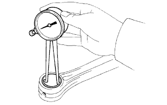 |
Using a caliper gauge, measure the inside diameter of the connecting rod small end bushing.
Calculate the clearance from the connecting rod small end bore diameter and the piston pin diameter.
| Selection Mark | Piston Pin Hole Diameter [mm] | Piston Pin Diameter [mm] | Connecting Rod Small End Bore Diameter [mm] |
|---|---|---|---|
| A | 22.001-22.004 | 21.997-22.000 | 22.005-22.008 |
| B | 22.005-22.007 | 22.001-22.003 | 22.009-22.011 |
| C | 22.008-22.010 | 22.004-22.006 | 22.012-22.014 |
| 25. Inspect Connecting Rod Bolt |
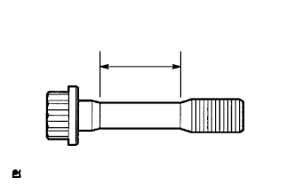 |
Using vernier calipers, measure the diameter within the range shown in the illustration.
| 26. Inspect Crankshaft |
Journal Diameter Inspection
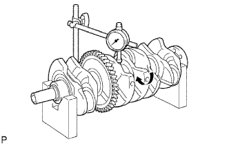 |
Using V-blocks and a dial indicator, measure the crankshaft runout.
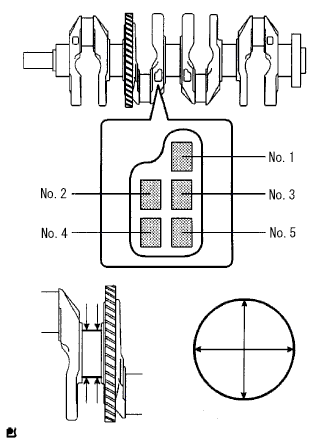 |
Using a micrometer, measure the crankshaft journal at the positions shown in the illustration.
| Journal Diameter Selection Mark | Journal Diameter [mm] |
|---|---|
| 0 | 54.999-55.000 |
| 1 | 54.997-54.998 |
| 2 | 54.995-54.996 |
| 3 | 54.993-54.994 |
| 4 | 54.991-54.992 |
| 5 | 54.988-54.990 |
Calculate the out-of-round and taper.
Crank Pin Diameter Inspection
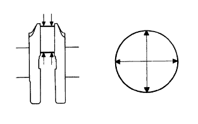 |
Using a micrometer, measure at the positions shown in the illustration.
Calculate the out-of-round and taper.
| 27. Inspect Crankshaft Bearing Cap Set Bolt |
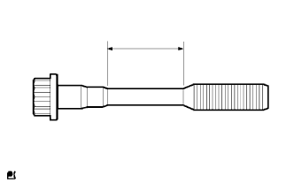 |
Using vernier calipers, measure the diameter within the range shown in the illustration.